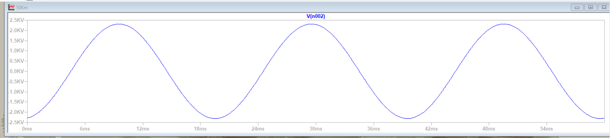
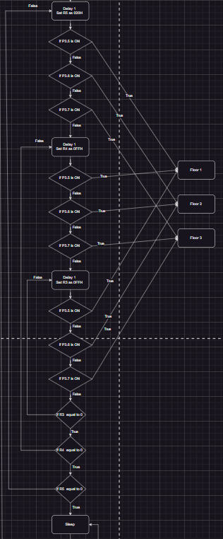

Programming, logic and electrical-machine foundations.
Academic engineering
From digital foundations to integrated intelligent systems.
Coursework and design studies that developed programming, digital logic, microcontrollers, electronics, control and systems integration. The final-year research work is detailed separately on the EEG-BCI page.
Study route
Microcontrollers, sequential systems and applied embedded control.
ASIC, process control and digital hardware design.
Capstone work, smart systems and EEG-BCI research.
Technical evidence
Visual records from simulation and control work.

Power and simulation
Transmission-line simulation study
LTspice comparison of 50 km and 80 km transmission-line models, including the effect of shunt capacitance using TC111W parameters.

Microcontrollers
Three-floor elevator controller
An 8051 model with calls and indication, L293D motor direction, emergency interrupt, buzzer, reactivation, idle power saving and door-controller coordination.
Selected work
Academic systems that led into the final project.
Digital electronic toolkit
Base and ASCII conversion, parity checking, truth tables, logic-device outputs and signed-binary representations.
Finite-state digital-system design
Verilog and Quartus work documented with a state table, K-map, D-flip-flop module, clock divider and schematic.
8-bit digital ALU blocks
Gate-level Verilog for an 8-bit ripple adder, NOR-only XNOR and overflow/carry indication with testbench evidence.
Hysteretic ON/OFF controller
Op-amp summing, inverter and comparator stages implementing two switching thresholds near a setpoint.
Smart Helmet dashboard
Python dashboard for ESP32 serial readings, environmental values, inertial data, impact alerts and connection state.
Project Flamescion
The final-year work combines EEG, vision and robotics into one documented research pipeline. Open the FYP page.